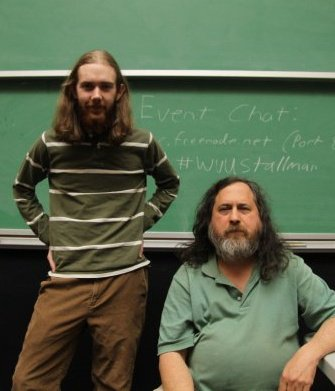
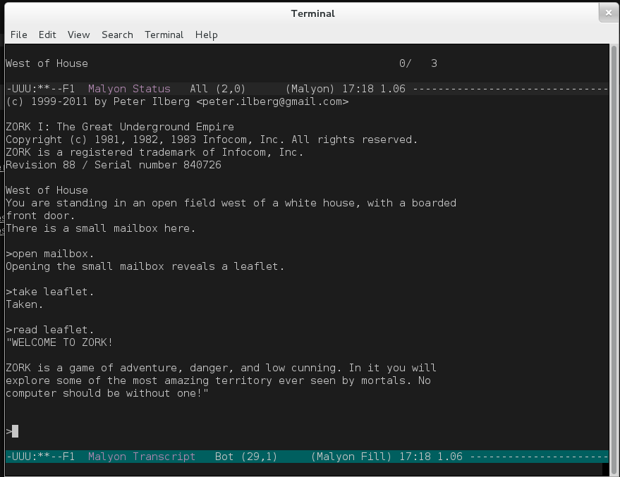
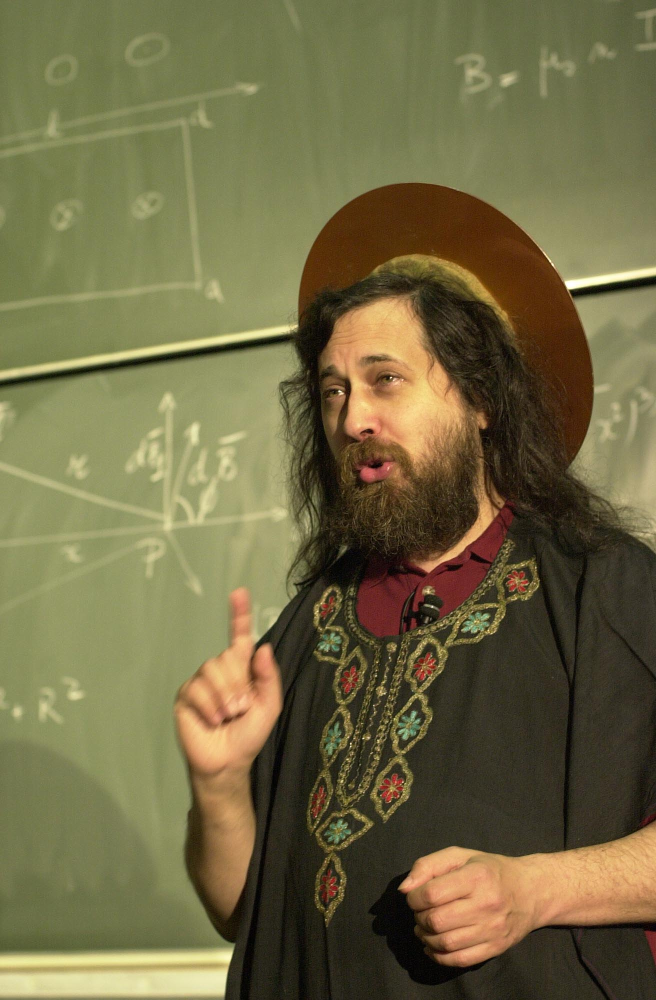
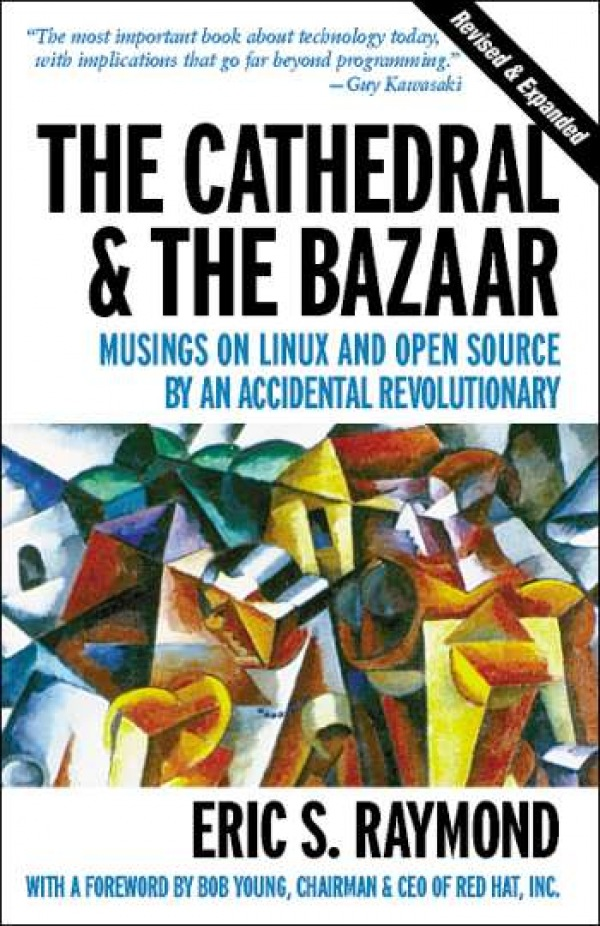
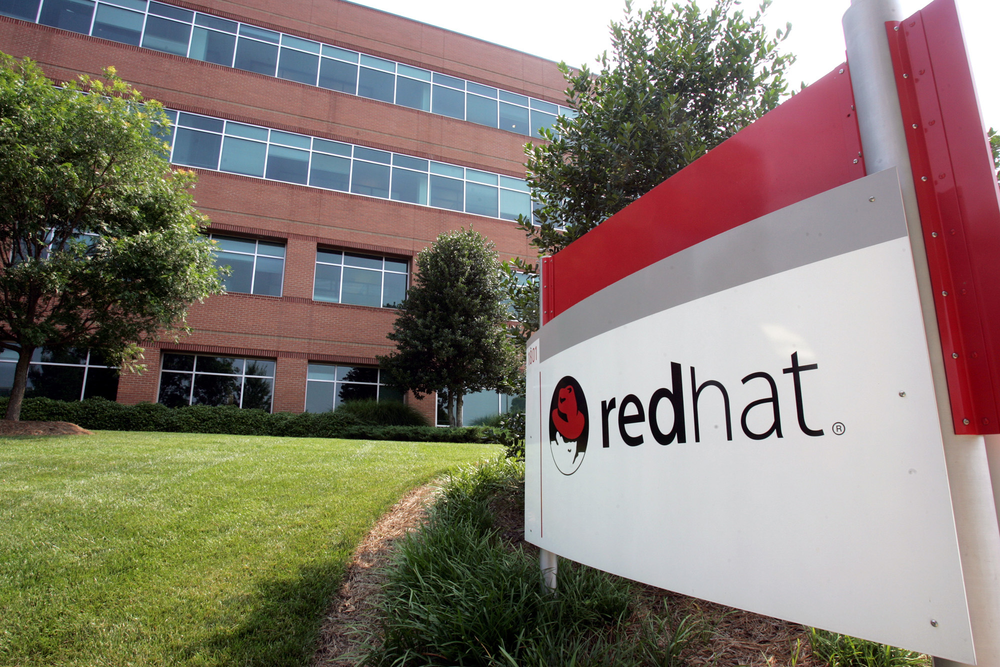
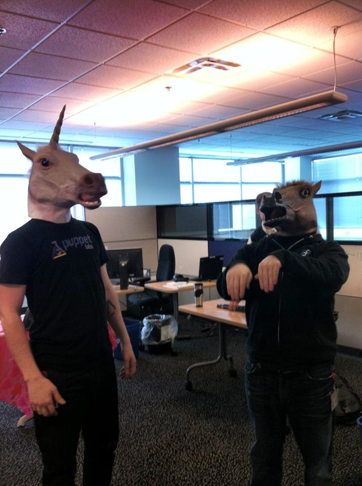

Open Source: A Guide
Adventuring toolkit for would be Open Source heros
Created by Tim Bielawa and Andrew Butcher
So who are these guys anyway?
Just bros, really
Personal intros before we talk about open source
A brief history of
Open Source
Richard Stallman (legend).

Some of you may remember when he was here in February, 2010 giving a talk about Copyright Law.
MIT Hacker community late 70's early 80's.
Stallman at this time is working in the AI Lab at MIT with
a bunch of other "hackers". It's important to note that
the community of people working at the lab freely modified
and traded programs with their source code.
This giant state of the art monolith was a gift from the
Xerox corporation. This was their first networked printer
which came with a boatload of new problems.
Prior to their receiving this gift, they had another
printer which they had a lot of problems with. Stallman
had written some code on their PDP-11 which would let
people know that the printer had become jammed and then
two to three people in the lab would come check it out and
at least one of them would be able to fix it. But they
didn't have the source code for this printer and wanted to
make similar modifications.
He then heard of a guy over at Carnegie Mellon who had
recently left a job at Xerox and had the source code that
they so desperately needed. And the man told Stallman that
he had "promised not to give him a copy". Because of an NDA.
This made Stallman extremely angry. So much so that he
would become a Crusader for software freedom, declining to
use software which came with a no sharing policy.
Free Software Foundation
Stallman founded the Free Software Foundation in 1985
which employed programmers to work on the GNU project
(which I'll talk about shortly).
It also enforces the GNU Public License (GPL) which was
created to ensure software freedoms.
freedom 0
The freedom to run the program,
for any purpose.
freedom 1
The freedom to study how the
program works, and change it so it
does your computing as you
wish. Access to the source code is a
precondition for this.
freedom 2
The freedom to redistribute
copies so you can help your
neighbor.
freedom 3
The freedom to distribute copies
of your modified versions to
others. By doing this you can give
the whole community a chance to
benefit from your changes. Access to
the source code is a precondition
for this.
The GNU Project
GCC: GNU C Compiler
GDB: GNU Debugger
GMAKE
…
The GNU Project was Richard Stallman's ambitious project
to create an ecosystem in which free software could live,
making it easy for others to use and help with creating
more free software programs.
Real Hackers™
Using a text-based editor in your shell is the only way to
do it. You should try it.

Emacs (Editor Macros) was an editor Stallman created
(inspired by TECMACS) which he would use to write his free
software.

Now, VI and EMACS came out around the same time. To this
day, there has always been a holy war between the two
factions or churches. In this picture Stallman is Saint
IGNUicus, the patron saint of the Church of Emacs.
Red Hat Emacs vs VI stories.
Hobbyist Era
The GNU Project had everything it needed at this point
except a kernel which would serve as the bridge between
hardware and applications.
Linus Torvalds, a Finnish graduate student would use the
tools created by Stallman to make the Kernel in 1991 and
named the whole package Linux (Linus+Unix). Wasn't his
idea but he stuck with it.
The penguin logo for Linux, TUX, was an idea of Linus
Torvalds and was created by Larry Ewing (designer involved
with gtk and gimp).
Stallman was pretty pissed with the naming of Linux
because he wasn't given any attribution. To this day,
Stallman will write GNU/ in front of Linux where he finds
it such as on the sign on Krovich's door.
Open Source Era
Eric S Raymond, unnofficial spokesman for the Open Source
Movement. Got his start in closed source software
development in the 80's and then became the maintainer of
many open source projects such as fetchmail (which he no
longer maintains).

Discusses the Cathedral approach to software development
vs. the Bazaar. In the Cathedral the code is handed down
to you from above, hunting for bugs in a closed system is
difficult because only a few developers have access to the
code to begin with.
In the Bazaar, where everyone is freely trading/working on
code, bugs are found quickly.
Defends the right for developers to close source if they
want to but talks about the benefits of open source.
Linus' Law:
Given enough eyeballs, all bugs are shallow.
The Cathedral and the Bazaar
Using the Bazaar approach to software development, any bug
becomes trivial with enough people looking at it because
it's open to the public's testing and scrutiny. Also goes
on to state that the logic of a closed source system puts
developers into dysfunctional roles that generate bad
results.
Major event in Open Source history - 1998 release of
Mozilla (then Netscape) Communicator 4.5. Eric Hahn of
Netscape references the Cathedral and the Bazaar in their
white paper that led to the release of the Netscape source
code.
Doesn't really work out and Netscape basically just
rewrites the whole thing but they've come a long way since
then.
The Open Source Initiative
Co-founded by Eric S Raymond in 1998 following the open
sourcing of Netscape. Created separately from the FSF to
"dump the moralizing and confrontational attitude that had
been associated with 'free software' in the past and sell
the idea strictly on the same pragmatic, business-case
grounds that had motivated Netscape." Michael Tiemann
The focus of OSI is on marketing, which Stallman says
ignored the "ethical imperative" of free software.

In 2012 Red Hat becomes the first Open Source company to
make 1 billion dollars, selling something that comes with
the source code.
How will this get me a job?
Companies using Open Source
98 percent of all enterprise companies are using open-source software in some capacity
Zenoss 2010
Anatomy of an Open Source Project
Now that we've given you the history of open source and
how bad ass it's going to make you look we want to dive in
and give some examples of what you'll find in open source
projects. This will make it easier when you decide to get
into it for the scholarship.
Version Control System
How many people have used a VCS before?
lines > 100 == you should have this in a VCS
Code
#!/usr/bin/env python
import os
import sys
from glob import glob
sys.path.insert(0, os.path.abspath('lib'))
from ansible import __version__, __author__
from distutils.core import setup
# find library modules
from ansible.constants import DIST_MODULE_PATH
data_files = [ (DIST_MODULE_PATH, glob('./library/*')) ]
print "DATA FILES=%s" % data_files
From github.com/ansible/ansible
Documentation
Being 'open source' isn't an
excuse for not having any/correct
documentation. It's not a community
task, it's your job.
— Tim
Bielawa (@tbielawa )
January 14, 2013
Installer / Packaging
./configure && make && make install
How can I get involved?
Some anecdotes...
My red hat inverview

Contributions are more than code.
VIDEO
Jordan Sissel - Czar of Logging at DreamHost

 Free Software Foundation
Free Software Foundation